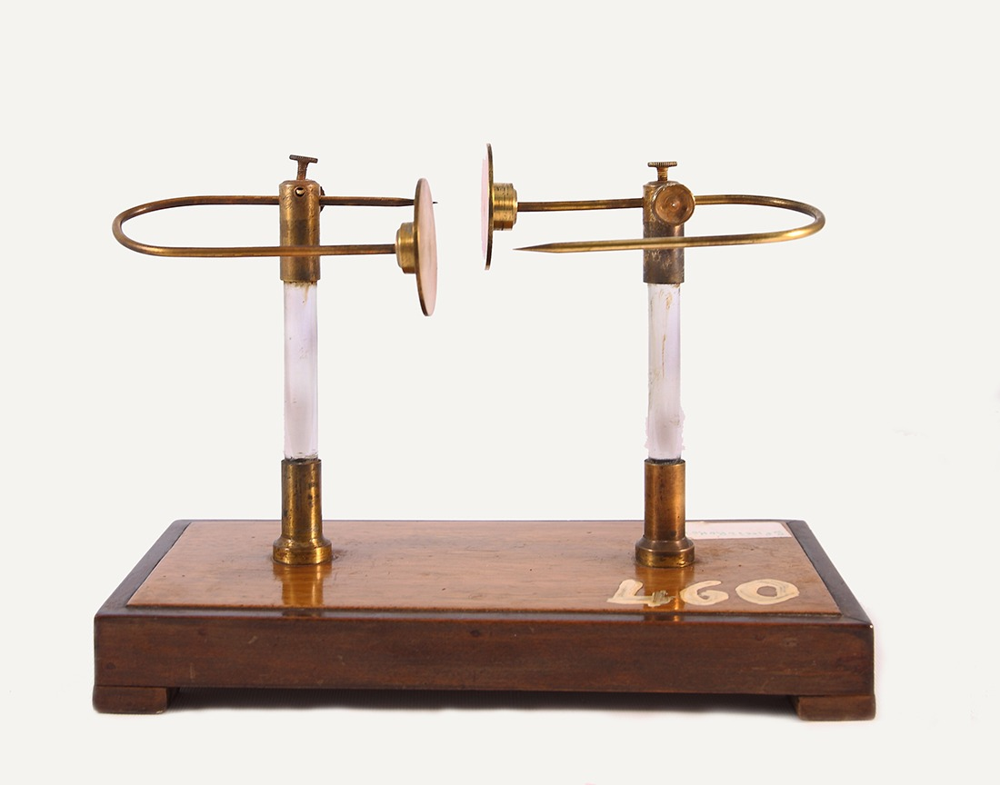
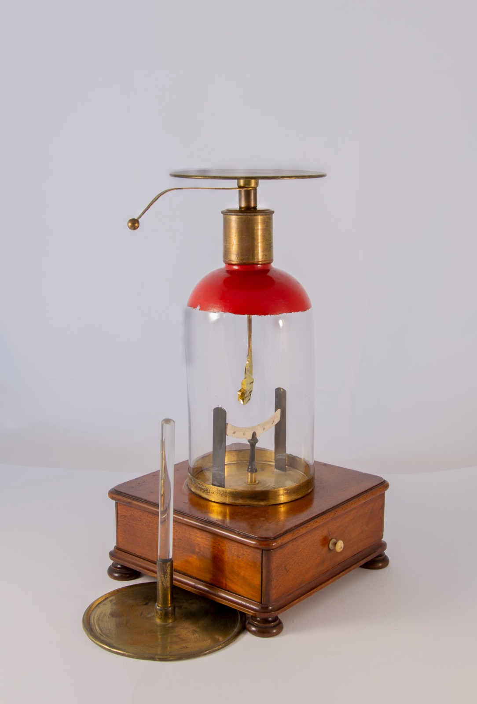
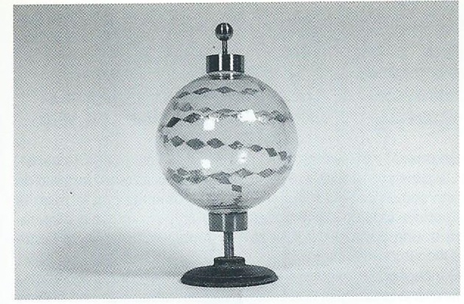
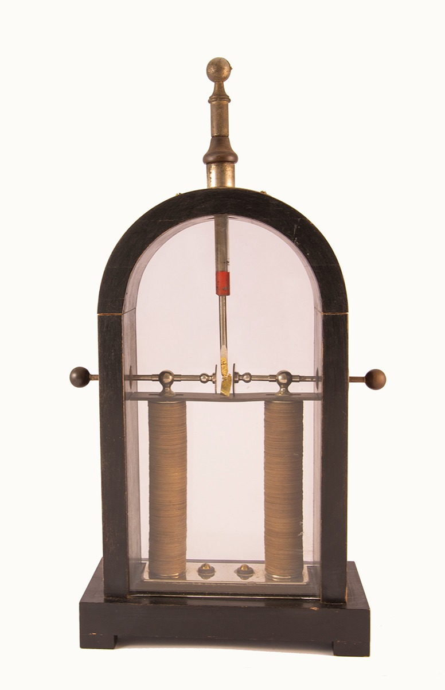
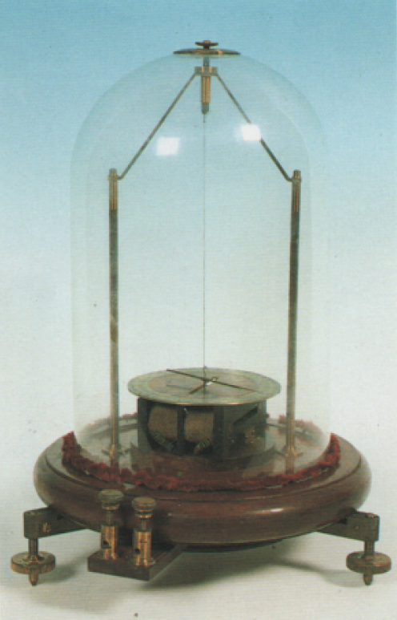
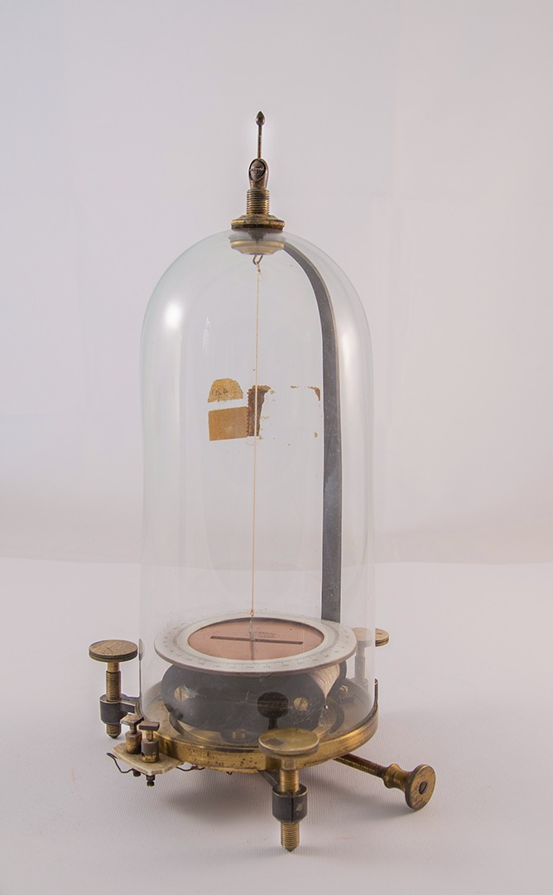
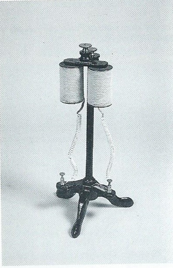
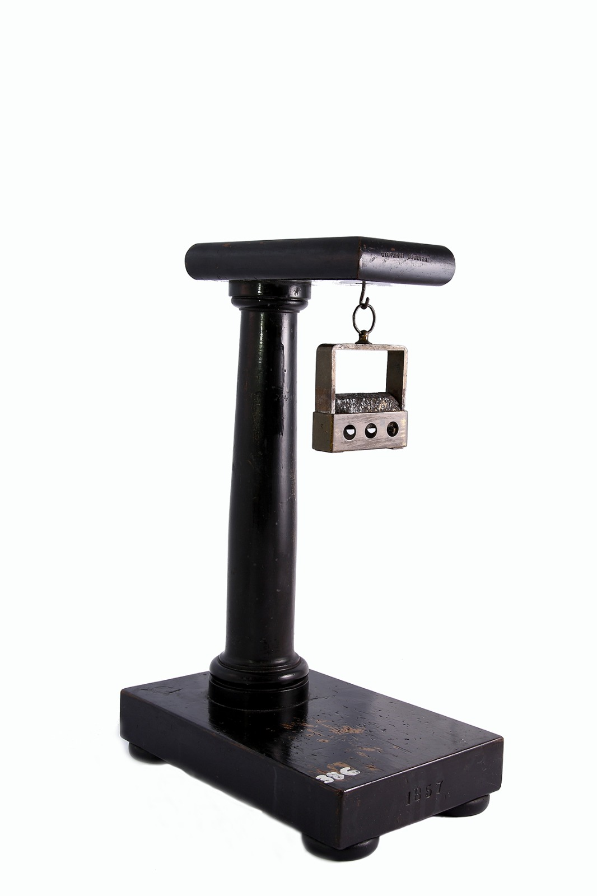

Elettromagnetismo #10

Questa vetrina raccoglie strumenti di elettromagnetismo ed elettrostatica. Il galvanometro astatico e quello a due aghi misurano correnti deboli, mentre gli elettroscopi (condensatore e di Bohnenberger) rilevano la presenza di cariche elettriche. Il globo scintillante e lo scaricatore a doppia forcella mostrano scariche elettriche, mentre le elettrocalamite e il supporto per calamita permettono di osservare gli effetti del magnetismo prodotto dalla corrente.
Qui puoi trovare:

Scaricatore a doppia forcella

Elettroscopio condensatore

Globo scintillante

Elettroscopio di Bohnenberger

Galvanometro astatico

Galvanometro a due aghi

Elettrocalamita

Supporto in legno per calamita